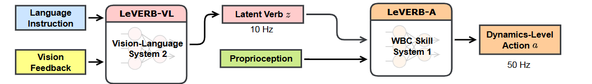
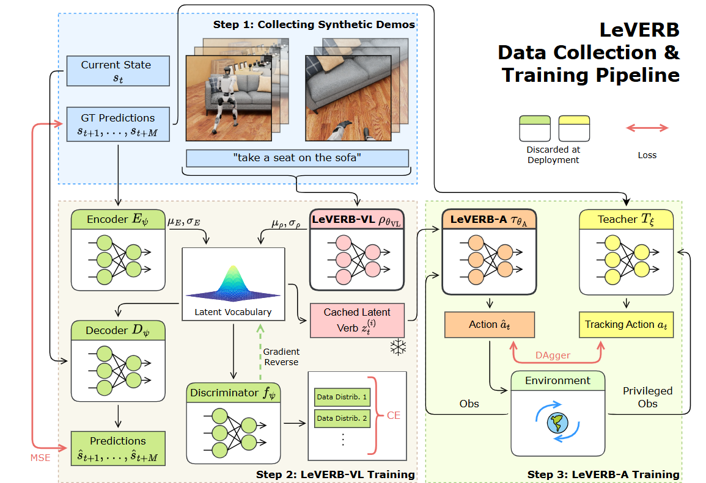

LeVERB论文阅读¶
伯克利的团队提出了一个benchmark，一个二层框架用来控制机器人的WBC（whole-body control)
LeVERB框架¶
LeVERB框架由两层组成，其中LeVERB-VL收集视觉和语言指示，输出潜在空间向量\(z\)。 \(z\)的潜在空间是一个编码了各种全身复杂动作的词汇库。LeVERB-A接收\(z\)和自身 传感器的消息，输出电机指令，控制机器人行动。其中LeVERB-VL是以10Hz频率运行，LeVERB-A以50Hz，也符合直觉。

LeVERB-VL(系统2)架构与训练¶
系统2接受视觉信息和文字指令，输出潜在空间的向量\(z\)。它的结构由一个视觉encoder， 一个文字encoder和一个transformer骨干网络组成。其中视觉和文字encoder经过了对比学习 预训练，语义已经对齐了。
训练时，第一人称图像被视觉encoder处理，经过注意力池化，产生token \(i_{t}^{ego}\)，同时第三人称视角的图像被编码为 \(i_{t}^{exo}\)，再加上文字指令生成的token \(I_{t}\)（这里t是指timestep）组成输入transformer的\(obs_t=[i_{t}^{ego},i_{t}^{exo},I_{t}]\)，经过transformer和后续的MLP，生成一个概率分布。

可以看出，系统2的输入只有视觉和文字，在训练时，还添加有一个运动学编码器\(E_ψ\)和对应的解码器\(D_ψ\)，用来从 未来的动作里学习，接受未来M步的state，输出预测潜在空间的多维正态分布\((μ_E,σ_E)\)。解码器也是MLP， 接受从潜在空间里采样的\(z_t\)和当前状态\(s_t\)，输出是重建未来状态。
潜在空间，是\(q(z_t \mid s_{t+1:t+M}, I_t, c, o_t)\)格式，代表接受未来M步的动作（运动学编码器），以及视觉文字输入（系统2） 以及整体观测空间，输出一个\(z_t\)的概率分布。具体来讲对于潜在空间的每一个维度，取值都是正态分布的，而正态分布的 \(μ = μ_E + μ_ρ\), \(σ = σ_E\)。也就是说，对于每一时刻，潜在空间取什么向量，取决于一个多维正态分布，而 其均值由系统2的“规划”和运动学编码器的“微调”组成，最终的“意图不确定性”完全由运动学编码器决定，因为系统2判断不了不同行为 的自由度有多大。
判别器\(f\)，是通过对抗学习，试图最小化——有无视觉图片的数据生成的LeVERB-VL生成的潜在向量的差距。具体来说，对那些 只有文字描述的轨迹，添加一张白噪声图像，系统2接受输入，并且输出一个\(z_t\)，\(f\)则通过\(z_t\)判断输入中有无真实图像， 由此鼓励LeVERB-VL生成模态无关的潜在向量。
最终训练目标：
- 轨迹重建：最小化运动学decoder（接受\(z_t\)输出未来轨迹）的输出与真实未来动作之间的差距。
- 分布对齐：最小化LeVERB-VL的输出(先验分布)和加了运动学encoder的输出(后验分布)之间的差距
- 对抗性分类：使用判别器，让LeVERB-VL学习到模态无关的更本质的信息。
LeVERB-A(系统1)架构与训练¶
训练好系统2后，冻结系统2的参数，开始LeVERB-A的训练。通过蒸馏，获得一个与LeVERB-VL输出(\(z\))相匹配的策略。
首先训练许多教师模型，这些模型接受参考动作和自身传感器观测，输出专家动作\(a_t\)
然后将多个教师模型的策略，蒸馏到同一个学生模型中。每个episode，从训练集里获取一个轨迹，输入系统2，从其潜在空间的分布里， 采样一个\(z_t\)(而非固定使用均值，加强鲁棒性)。将\(z_t, o_{t}&{prop}\)输入LeVERB-A，用DAgger算法蒸馏，进行训练。但是部署时， 就不用采样了，直接使用LeVERB-VL输出的潜在空间的多维均值\(μ_ρ\)